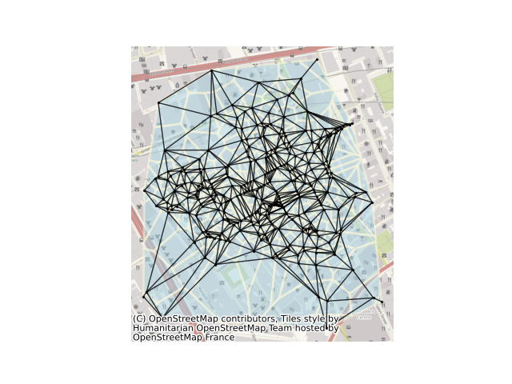

Note
Click here to download the full example code
Delaunay graphs from geographic points¶
This example shows how to build a delaunay graph (plus its dual, the set of Voronoi polygons) from a set of points. For this, we will use the set of cholera cases at the Broad Street Pump, recorded by John Snow in 1853. The methods shown here can also work directly with polygonal data using their centroids as representative points.
from libpysal import weights, examples
from libpysal.cg import voronoi_frames
from contextily import add_basemap
import matplotlib.pyplot as plt
import networkx as nx
import numpy as np
import geopandas
# read in example data from a geopackage file. Geopackages
# are a format for storing geographic data that is backed
# by sqlite. geopandas reads data relying on the fiona package,
# providing a high-level pandas-style interface to geographic data.
# Many different kinds of geographic data formats can be read by geopandas.
cases = geopandas.read_file("cholera_cases.gpkg")
# In order for networkx to plot the nodes of our graph correctly, we
# need to construct the array of coordinates for each point in our dataset.
# To get this as a numpy array, we extract the x and y coordinates from the
# geometry column.
coordinates = np.column_stack((cases.geometry.x, cases.geometry.y))
# While we could simply present the Delaunay graph directly, it is useful to
# visualize the Delaunay graph alongside the Voronoi diagram. This is because
# the two are intrinsically linked: the adjacency graph of the Voronoi diagram
# is the Delaunay graph for the set of generator points! Put simply, this means
# we can build the Voronoi diagram (relying on scipy.spatial for the underlying
# computations), and then convert these polygons quickly into the Delaunay graph.
# Be careful, though; our algorithm, by default, will clip the voronoi diagram to
# the bounding box of the point pattern. This is controlled by the "clip" argument.
cells, generators = voronoi_frames(coordinates, clip="convex hull")
# With the voronoi polygons, we can construct the adjacency graph between them using
# "Rook" contiguity. This represents voronoi cells as being adjacent if they share
# an edge/face. This is an analogue to the "von Neuman" neighborhood, or the 4 cardinal
# neighbors in a regular grid. The name comes from the directions a Rook piece can move
# on a chessboard.
delaunay = weights.Rook.from_dataframe(cells)
# Once the graph is built, we can convert the graphs to networkx objects using the
# relevant method.
delaunay_graph = delaunay.to_networkx()
# To plot with networkx, we need to merge the nodes back to
# their positions in order to plot in networkx
positions = dict(zip(delaunay_graph.nodes, coordinates))
# Now, we can plot with a nice basemap.
ax = cells.plot(facecolor="lightblue", alpha=0.50, edgecolor="cornsilk", linewidth=2)
add_basemap(ax)
ax.axis("off")
nx.draw(
delaunay_graph,
positions,
ax=ax,
node_size=2,
node_color="k",
edge_color="k",
alpha=0.8,
)
plt.show()
Total running time of the script: ( 0 minutes 2.041 seconds)